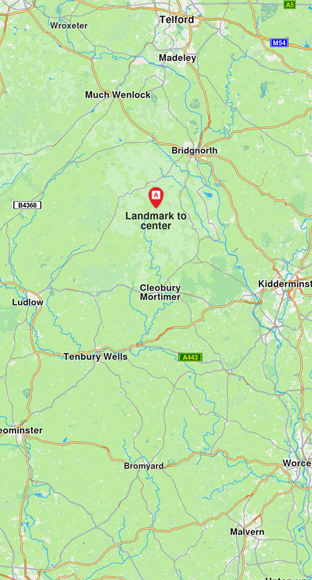
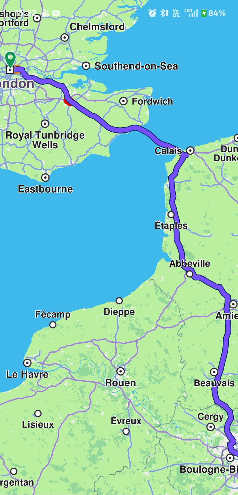
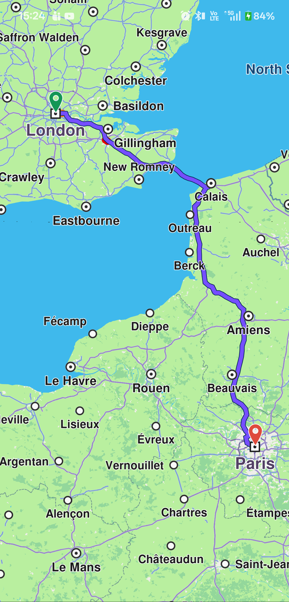
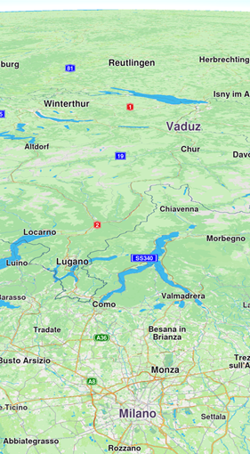
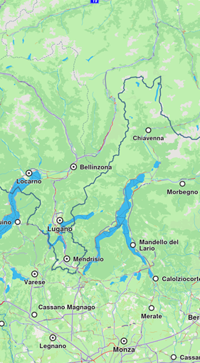
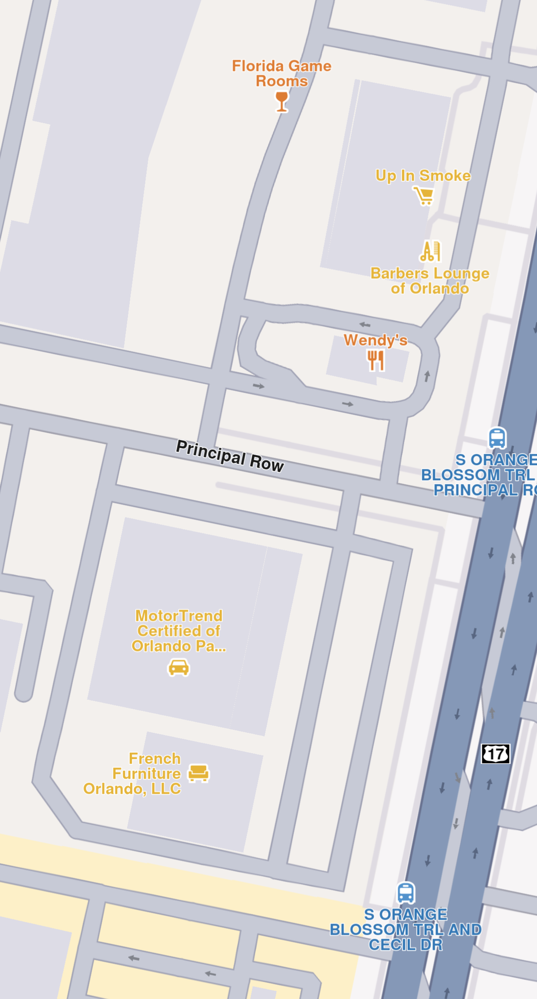
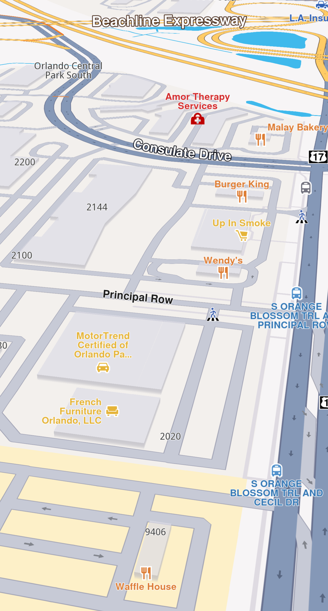
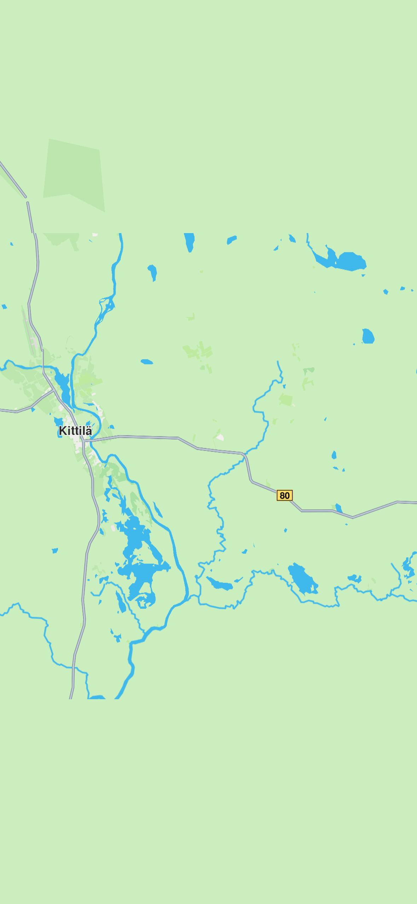

Adjust the Map View¶
The Navigation SDK provides multiple ways to modify the map view, center on coordinates or areas, and explore different perspectives. Control map features like zoom, tilt, rotation, and centering through the GemMapController provided by GemMap.
Get the Map Viewport¶
The map viewport is the visible area displayed by the GemMap widget. The viewport getter returns a Rectangle object containing xy coordinates (left and top) and dimensions (width and height).
The top-left coordinate is [0, 0] and bottom-right is [viewport.width, viewport.height].
final currentViewport = mapController.viewport📝 Note: The width and height are measured in physical pixels. To convert them to Flutter logical pixels, use the
GemMapController.devicePixelSizegetter. See Flutter documentation for more details.
Convert physical pixels to logical pixels:
final currentViewport = mapController.viewport;
final flutterHeightPixels = currentViewport.height / mapController.devicePixelSize;
final flutterWidthPixels = currentViewport.width / mapController.devicePixelSize;Center the Map¶
Center the map using methods like centerOnCoordinates, centerOnArea, centerOnAreaRect, centerOnRoute, centerOnRoutePart, centerOnRouteInstruction, and centerOnRouteTrafficEvent.
Center on coordinates¶
Center WGS coordinates on the viewport using the centerOnCoordinates method:
mapController.centerOnCoordinates(Coordinates(latitude: 45, longitude: 25));controller.centerOnCoordinates(
Coordinates(latitude: 52.14569, longitude: 1.0615),
animation: GemAnimation(type: AnimationType.linear, duration: 2000));💡 Tip: Call
skipAnimation()to bypass the animation. UseisAnimationInProgressto check if an animation is running, orisCameraMovingto check if the camera is moving.🚨 Alert: Do not confuse
zoomLevelwithslippyZoomLevel. TheslippyZoomLevelis linked to the tile system.
Convert between screen and WGS coordinates¶
Convert a screen position to WGS coordinates using transformScreenToWgs():
Coordinates coordsToCenter = mapController.transformScreenToWgs(Point(pos.x, pos.y));
mapController.centerOnCoordinates(coordsToCenter, zoomLevel: 70);📝 Note: If the applied style includes elevation and terrain data is loaded,
transformScreenToWgsreturnsCoordinatesobjects with altitude. Check for terrain support using thehasTerrainTopographygetter.
Convert WGS coordinates to screen coordinates using transformWgsToScreen():
Coordinates wgsCoordinates = Coordinates(latitude: 8, longitude: 25);
Point<int> screenPosition = mapController.transformWgsToScreen(wgsCoordinates);💡 Tip: Use
transformWgsListToScreento convert multiple WGS coordinates to screen coordinates. UsetransformScreenToWgsRectto convert aRectangle<int>to aRectangleGeographicArea.
Center on coordinates at a screen position¶
Center on a different viewport area by providing a screenPosition parameter as a Point<int>. The x coordinate should be in [0, viewport.width] and y in [0, viewport.height].
🚨 Alert: The
screenPositionparameter uses physical pixels, not logical pixels.
Center the map at one-third of its height:
final physicalHeightPixels = mapController.viewport.height;
final physicalWidthPixels = mapController.viewport.width;
mapController.centerOnCoordinates(
Coordinates(latitude: 52.48209, longitude: -2.48888),
zoomLevel: 40,
screenPosition: Point(physicalWidthPixels ~/ 2, physicalHeightPixels ~/ 3),
);
💡 Tip: Pass additional parameters like
animation,mapAngle,viewAngle, andzoomLevelfor more control.
Center on an area¶
Center on a specific GeographicArea such as a RectangleGeographicArea defined by top-left and bottom-right coordinates:
final topLeftCoords = Coordinates(latitude: 44.93343, longitude: 25.09946);
final bottomRightCoords = Coordinates(latitude: 44.93324, longitude: 25.09987);
final area = RectangleGeographicArea(topLeft: topLeftCoords, bottomRight: bottomRightCoords);
mapController.centerOnArea(area);GeographicArea covers most of the viewport. To center the area at a specific viewport coordinate, provide a screenPosition parameter as a Point<int>.
Alternatively, use centerOnAreaRect to center on a specific viewport region. Pass a viewRc parameter as a Rectangle<int> to define the target screen region. The Rectangle determines the positioning relative to the top-left coordinates, with the top-right corner at left + Rectangle's width.
📝 Note: As the
Rectanglewidth and height decrease, the view becomes more zoomed out. For a zoomed-in view, use larger values within [1, viewport.width - x] and [1, viewport.height - y].💡 Tip: Use
getOptimalRoutesCenterViewportandgetOptimalHighlightCenterViewportto compute the optimal viewport region for routes and highlights.
Center on an area with padding¶
Center on an area with padding by adjusting screen coordinates (in physical pixels) with the padding value. Create a new RectangleGeographicArea using the padded screen coordinates transformed to WGS coordinates via transformScreenToWgs(point).
// Getting the RectangleGeographicArea in which the route belongs
final routeArea = route.geographicArea;
const paddingPixels = 200;
// Getting the top left point screen coordinates in physical pixels
final routeAreaTopLeftPoint = mapController.transformWgsToScreen(routeArea.topLeft);
// Adding padding by shifting point in the top left
final topLeftPadded = Point<int>(
routeAreaTopLeftPoint.x - paddingPixels,
routeAreaTopLeftPoint.y - paddingPixels,
);
final routeAreaBottomRightPoint = mapController.transformWgsToScreen(routeArea.bottomRight);
// Adding padding by shifting point downwards three times the padding
final bottomRightPadded = Point<int>(
routeAreaBottomRightPoint.x + paddingPixels,
routeAreaBottomRightPoint.y + 3 * paddingPixels,
);
// Converting points with padding to wgs coordinates
final paddedTopLeftCoordinate = mapController.transformScreenToWgs(topLeftPadded);
final paddedBottomRightCoordinate = mapController.transformScreenToWgs(bottomRightPadded);
mapController.centerOnArea(RectangleGeographicArea(
topLeft: paddedTopLeftCoordinate,
bottomRight: paddedBottomRightCoordinate,
));
Route without padding
Route with center padding🚨 Alert: When applying padding using Flutter panel heights, note that heights are measured in logical pixels, not physical pixels. A conversion is required, as detailed in Get the map viewport.
Adjust the zoom level¶
Get the current zoom level using the zoomLevel getter. Higher values bring the camera closer to the terrain. Change the zoom level using setZoomLevel:
final int zoomLevel = mapController.zoomLevel;
mapController.setZoomLevel(50);You can also use the mapAngle setter from the GemMapController class.
Adjust the view angle¶
The camera can transform the flat 2D map into a 3D perspective, allowing you to view features like distant roads appearing on the horizon. By default, the camera has a top-down perspective (viewAngle = 90°).
In addition to adjusting the camera's view angle, you can modify its tilt angle. The tiltAngle is defined as the complement of the viewAngle, calculated as tiltAngle = 90-viewAngle
In order to change the view angle of camera you need to access the preferences field of GemMapController like so:
final double viewAngle = mapController.preferences.viewAngle;
mapController.preferences.setViewAngle(45);
Map with a view angle of 60 degrees
Map with a view angle of 0 degreesTo adjust the camera's perspective dynamically, you can utilize both the tiltAngle and viewAngle properties.
This operation can also be done using the viewAngle setter available in the GemMapController class.
📝 Note: Adjusting the rotation value produces different outcomes depending on the camera's tilt. When tilted, changing rotation shifts the target location. With no tilt, the target location remains fixed.
Set the map perspective¶
Set the map perspective to two-dimensional or three-dimensional using setMapViewPerspective:
final MapViewPerspective perspective = mapController.preferences.mapViewPerspective;
mapController.preferences.setMapViewPerspective(MapViewPerspective.threeDimensional);
Map with a two-dimensional perspective
Map with a three-dimensional perspectiveA three-dimensional perspective gives buildings a realistic 3D appearance, while a two-dimensional perspective displays them as flat shapes.
📝 Note: For three-dimensional buildings to be visible, the camera angle must not be perpendicular to the map. The view angle must be less than 90 degrees.
You can achieve the same effect more precisely using the tiltAngle or viewAngle fields.
Control Building Visibility¶
Control building visibility using the buildingsVisibility getter/setter from MapViewPreferences:
defaultVisibility- Uses the default visibility from the map stylehide- Hides all buildingstwoDimensional- Displays buildings as flat 2D polygons without heightthreeDimensional- Displays buildings as 3D polygons with height
final BuildingsVisibility visibility = mapController.preferences.buildingsVisibility;
mapController.preferences.buildingsVisibility = BuildingsVisibility.twoDimensional;Store And Restore A View¶
The map camera object provides getters and setters for position and orientation, giving you full control over the map view.
Store a view using the cameraState getter. This returns a Uint8List object that can be stored in a variable or serialized to a file:
final state = mapController.camera.cameraState;cameraState setter:
mapController.camera.cameraState = state;position and orientation separately using the provided getters and setters.
📝 Note: The
cameraStatedoes not contain information about the current style.
Download Map Tiles¶
A map tile is a small, rectangular image or data chunk that represents a specific geographic area at a particular zoom level on a GemMap widget. Tiles are usually downloaded when panning or zooming in on a map, and they are used to render the map's visual content. However, you can also download tiles that are not currently visible on the screen, using the MapDownloaderService class.
Configuring the MapDownloaderService¶
The service can be configured by setting specific maximum area size in square kilometers to download by using the setMaxSquareKm setter:
final service = MapDownloaderService();
// Set a new value
service.maxSquareKm = 100;
// Verify the new value
final int updatedMaxSquareKm = service.maxSquareKm;🚨 Alert: If the
RectangleGeographicAreasurface exceedsMaxSquareKm,MapDownloaderServicereturnsGemError.outOfRange.
Download tiles by calling the startDownload method:
final service = MapDownloaderService();
final completer = Completer<GemError>();
service.maxSquareKm = 300;
service.startDownload([
// Area in which the tiles will be downloaded that is under 300 square kilometers
RectangleGeographicArea(
topLeft: Coordinates(latitude: 67.69866, longitude: 24.81115),
bottomRight: Coordinates(latitude: 67.58326, longitude: 25.36093))
], (err) {
completer.complete(err);
});
final res = await completer.future;onComplete callback is invoked with a GemError parameter indicating the success or failure of the operation. If the download is successful, the error will be GemError.success. Downloaded tiles are stored in the cache and can be used later for features such as viewing map content, searchAlongRoute, searchAroundPosition, searchInArea without requiring an internet connection.

Downloaded tiles centered in the middle, top and bottom tiles are not available.📝 Note: The
SearchService.searchmethod returnsGemError.invalidInputwhen searching in downloaded tile areas, as it requires indexing, which is not available for downloaded tiles.
Cancel downloads by calling cancelDownload. The onComplete callback will be invoked with GemError.cancelled.
💡 Tip: Downloading previously downloaded tiles will not return
GemError.upToDate. Downloaded tiles are stored in theData/Temporary/Tilesfolder as.dat1files.
Access detailed download statistics using the transferStatistics getter.
🚨 Alert: Downloaded map tiles via
MapDownloaderServicedo not support free-text search, routing, or turn-by-turn navigation offline. They are intended for caching map data for visual display only.
For full offline functionality, including search and navigation, see the Manage Offline Content Guide to download roadmap data for offline use.
Change Settings While Following Position¶
The FollowPositionPreferences class provides customization while the camera is in follow position mode
FollowPositionPreferences preferences = mapController.preferences.followPositionPreferences;🚨 Alert: Do not call methods on disposed
GemMapControllerinstances, as this may cause exceptions. If theGemMapwidget is removed from the widget tree, avoid invoking methods on its associatedGemMapControlleror related entities: -MapViewPreferences-MapViewRoutesCollection-MapViewPathCollection-LandmarkStoreCollection-FollowPositionPreferences-MapViewExtensions-MapViewMarkerCollections